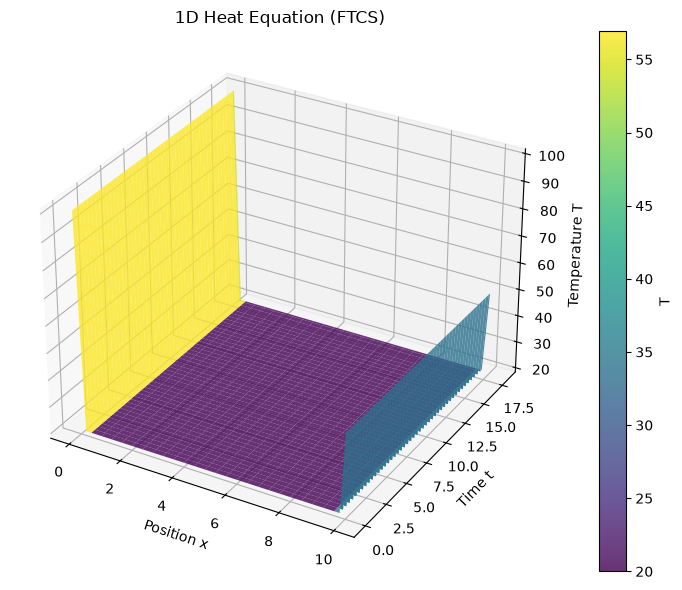
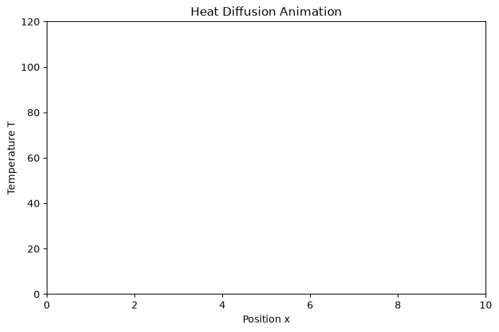

Partial differential equations: The (parabolic) heat equation#
The heat equation is the typical example of a parabolic partial differential equation. Here we have the time and we are looking for an actual time evolution. It can be written as
where \(u\) represents the temperature, or the concentration (diffusion problem) and so on. The coefficient \(\alpha\) takes into account the thermal conductivity, specific heat, and density of the material.
In the following, we will use as main references the book from Chapra and also
Wikipedia
The explicit method: Forward time centered space#
As is usual in finite differences, we discretize both the spatial (up to second order) and the time (linear order) derivatives to get
where the superscript corresponds to a step in time, while the subscript corresponds to step in space (we are here solving a one-dimensional equation). This is the so called FTCS - Forward Time Centered Space method, which is an explicit method which allows to compute the next (in time) value in terms of the previous one.
Reorganizing terms
which can be visualized as

Note
Limitations The explicit ftcs method is \(O(N)\) but \(\Delta t \propto \Delta x^2\)
Numerical stability#
By using the von Neumann stability analysis it is possible to show that the solution is stable (errors are not amplified) only if
or, in 2D with different spacing
This is very important: the discretization cannot be changed arbitrarily, otherwise you will have instabilities.
Example: Finding the temperature distribution on a thind rod#
Now let’s solve an example (Chapra 30.1): A thin rod of 10 cm, with \(\alpha = 0.835\) cm\(^2\)/s, \(\Delta t = 0.1 \)s, \(\Delta x = 10\) cm, and \(\lambda = \alpha \Delta t/\Delta x^2 = 0.020875\). The boundary conditions are \(T(0) = 100\) C, and \(T(10) = 50\) C.
import numpy as np
import matplotlib.pyplot as plt
from matplotlib.animation import FuncAnimation
from mpl_toolkits.mplot3d import Axes3D
# ----------------------------
# 1. Problem Setup
# ----------------------------
L = 10.0
NX = 51 # Spatial points (fixed ends + interior)
DX = L / (NX - 1) # dx = L/(N-1) for correct grid spacing
ALPHA = 0.5 # Thermal diffusivity
LAMBDA = 0.45 # Stability parameter (must be <= 0.5 for FTCS)
DT = LAMBDA * DX**2 / ALPHA # Compute dt from stability limit
N_STEPS = 500
# Grids
x = np.linspace(0, L, NX)
t = np.arange(N_STEPS + 1) * DT
# Initial & Boundary Conditions
T = np.zeros(NX)
T[0] = 100.0 # Left Dirichlet BC
T[-1] = 50.0 # Right Dirichlet BC
T[1:-1] = 20.0 # Uniform interior (try Gaussian for more visual interest)
#T[1:-1] = np.random.uniform(-55.0, 50.0, size = len(T[1:-1]))
# ----------------------------
# 2. FTCS Solver
# ----------------------------
def ftcs(T, dt, dx, alpha):
"""
Perform a ftcs step. NOTE: Do not overwrite T, return the new values in Tnew
Ignore the borders, those are the boundary conditions
ARGS
T = Current Temperature array
deltat = Time step
deltax = Spatial step
lambdac = Coefficient parameter
RETURNS
Tnew = New temperature
"""
Tnew = T.copy()
lambdac = alpha * dt / dx**2
# YOUR CODE HERE
pass
return Tnew
# Storage for solution history
U = np.zeros((N_STEPS + 1, NX))
U[0] = T.copy()
# Time stepping
for n in range(1, N_STEPS + 1):
U[n] = ftcs(U[n-1], DT, DX, ALPHA)
%matplotlib inline
# ----------------------------
# 3. 3D Surface Plot
# ----------------------------
fig = plt.figure(figsize=(10, 6))
ax = fig.add_subplot(111, projection='3d')
X, T_grid = np.meshgrid(x, t)
surf = ax.plot_surface(X, T_grid, U, cmap='viridis', edgecolor='none', alpha=0.8)
ax.set_xlabel('Position x')
ax.set_ylabel('Time t')
ax.set_zlabel('Temperature T')
ax.set_title('1D Heat Equation (FTCS)')
fig.colorbar(surf, ax=ax, label='T')
plt.tight_layout()
plt.show()

from IPython.display import HTML
# ----------------------------
# 4. Animation
# ----------------------------
fig_anim, ax_anim = plt.subplots(figsize=(8, 5))
line, = ax_anim.plot([], [], 'b-', lw=2.5)
ax_anim.set_xlim(0, L)
ax_anim.set_ylim(0, 120)
ax_anim.set_xlabel('Position x')
ax_anim.set_ylabel('Temperature T')
ax_anim.set_title('Heat Diffusion Animation')
time_text = ax_anim.text(0.02, 0.95, '', transform=ax_anim.transAxes, fontsize=12)
def init():
line.set_data([], [])
time_text.set_text('')
return line, time_text
def animate(i):
line.set_data(x, U[i])
time_text.set_text(f't = {t[i]:.2f}')
return line, time_text
anim = FuncAnimation(fig_anim, animate, frames=N_STEPS, init_func=init, interval=50, blit=True)
plt.show()
HTML(anim.to_jshtml())

---------------------------------------------------------------------------
KeyboardInterrupt Traceback (most recent call last)
Cell In[7], line 27
23
24 anim = FuncAnimation(fig_anim, animate, frames=N_STEPS, init_func=init, interval=50, blit=True)
25 plt.show()
26
---> 27 HTML(anim.to_jshtml())
File /opt/hostedtoolcache/Python/3.11.15/x64/lib/python3.11/site-packages/matplotlib/animation.py:1392, in Animation.to_jshtml(self, fps, embed_frames, default_mode)
1388 path = Path(tmpdir, "temp.html")
1389 writer = HTMLWriter(fps=fps,
1390 embed_frames=embed_frames,
1391 default_mode=default_mode)
-> 1392 self.save(str(path), writer=writer)
1393 self._html_representation = path.read_text()
1395 return self._html_representation
File /opt/hostedtoolcache/Python/3.11.15/x64/lib/python3.11/site-packages/matplotlib/animation.py:1142, in Animation.save(self, filename, writer, fps, dpi, codec, bitrate, extra_args, metadata, extra_anim, savefig_kwargs, progress_callback)
1140 progress_callback(frame_number, total_frames)
1141 frame_number += 1
-> 1142 writer.grab_frame(**savefig_kwargs)
File /opt/hostedtoolcache/Python/3.11.15/x64/lib/python3.11/site-packages/matplotlib/animation.py:801, in HTMLWriter.grab_frame(self, **savefig_kwargs)
799 return
800 f = BytesIO()
--> 801 self.fig.savefig(f, format=self.frame_format,
802 dpi=self.dpi, **savefig_kwargs)
803 imgdata64 = base64.encodebytes(f.getvalue()).decode('ascii')
804 self._total_bytes += len(imgdata64)
File /opt/hostedtoolcache/Python/3.11.15/x64/lib/python3.11/site-packages/matplotlib/figure.py:3515, in Figure.savefig(self, fname, transparent, **kwargs)
3513 for ax in self.axes:
3514 _recursively_make_axes_transparent(stack, ax)
-> 3515 self.canvas.print_figure(fname, **kwargs)
File /opt/hostedtoolcache/Python/3.11.15/x64/lib/python3.11/site-packages/matplotlib/backend_bases.py:2281, in FigureCanvasBase.print_figure(self, filename, dpi, facecolor, edgecolor, orientation, format, bbox_inches, pad_inches, bbox_extra_artists, backend, **kwargs)
2277 try:
2278 # _get_renderer may change the figure dpi (as vector formats
2279 # force the figure dpi to 72), so we need to set it again here.
2280 with cbook._setattr_cm(self.figure, dpi=dpi):
-> 2281 result = print_method(
2282 filename,
2283 facecolor=facecolor,
2284 edgecolor=edgecolor,
2285 orientation=orientation,
2286 bbox_inches_restore=_bbox_inches_restore,
2287 **kwargs)
2288 finally:
2289 if bbox_inches and restore_bbox:
File /opt/hostedtoolcache/Python/3.11.15/x64/lib/python3.11/site-packages/matplotlib/backend_bases.py:2138, in FigureCanvasBase._switch_canvas_and_return_print_method.<locals>.<lambda>(*args, **kwargs)
2134 optional_kws = { # Passed by print_figure for other renderers.
2135 "dpi", "facecolor", "edgecolor", "orientation",
2136 "bbox_inches_restore"}
2137 skip = optional_kws - {*inspect.signature(meth).parameters}
-> 2138 print_method = functools.wraps(meth)(lambda *args, **kwargs: meth(
2139 *args, **{k: v for k, v in kwargs.items() if k not in skip}))
2140 else: # Let third-parties do as they see fit.
2141 print_method = meth
File /opt/hostedtoolcache/Python/3.11.15/x64/lib/python3.11/site-packages/matplotlib/backends/backend_agg.py:537, in FigureCanvasAgg.print_png(self, filename_or_obj, metadata, pil_kwargs)
490 def print_png(self, filename_or_obj, *, metadata=None, pil_kwargs=None):
491 """
492 Write the figure to a PNG file.
493
(...) 535 *metadata*, including the default 'Software' key.
536 """
--> 537 self._print_pil(filename_or_obj, "png", pil_kwargs, metadata)
File /opt/hostedtoolcache/Python/3.11.15/x64/lib/python3.11/site-packages/matplotlib/backends/backend_agg.py:485, in FigureCanvasAgg._print_pil(self, filename_or_obj, fmt, pil_kwargs, metadata)
480 def _print_pil(self, filename_or_obj, fmt, pil_kwargs, metadata=None):
481 """
482 Draw the canvas, then save it using `.image.imsave` (to which
483 *pil_kwargs* and *metadata* are forwarded).
484 """
--> 485 FigureCanvasAgg.draw(self)
486 mpl.image.imsave(
487 filename_or_obj, self.buffer_rgba(), format=fmt, origin="upper",
488 dpi=self.figure.dpi, metadata=metadata, pil_kwargs=pil_kwargs)
File /opt/hostedtoolcache/Python/3.11.15/x64/lib/python3.11/site-packages/matplotlib/backends/backend_agg.py:438, in FigureCanvasAgg.draw(self)
435 # Acquire a lock on the shared font cache.
436 with (self.toolbar._wait_cursor_for_draw_cm() if self.toolbar
437 else nullcontext()):
--> 438 self.figure.draw(self.renderer)
439 # A GUI class may be need to update a window using this draw, so
440 # don't forget to call the superclass.
441 super().draw()
File /opt/hostedtoolcache/Python/3.11.15/x64/lib/python3.11/site-packages/matplotlib/artist.py:94, in _finalize_rasterization.<locals>.draw_wrapper(artist, renderer, *args, **kwargs)
92 @wraps(draw)
93 def draw_wrapper(artist, renderer, *args, **kwargs):
---> 94 result = draw(artist, renderer, *args, **kwargs)
95 if renderer._rasterizing:
96 renderer.stop_rasterizing()
File /opt/hostedtoolcache/Python/3.11.15/x64/lib/python3.11/site-packages/matplotlib/artist.py:71, in allow_rasterization.<locals>.draw_wrapper(artist, renderer)
68 if artist.get_agg_filter() is not None:
69 renderer.start_filter()
---> 71 return draw(artist, renderer)
72 finally:
73 if artist.get_agg_filter() is not None:
File /opt/hostedtoolcache/Python/3.11.15/x64/lib/python3.11/site-packages/matplotlib/figure.py:3282, in Figure.draw(self, renderer)
3279 # ValueError can occur when resizing a window.
3281 self.patch.draw(renderer)
-> 3282 mimage._draw_list_compositing_images(
3283 renderer, self, artists, self.suppressComposite)
3285 renderer.close_group('figure')
3286 finally:
File /opt/hostedtoolcache/Python/3.11.15/x64/lib/python3.11/site-packages/matplotlib/image.py:133, in _draw_list_compositing_images(renderer, parent, artists, suppress_composite)
131 if not_composite or not has_images:
132 for a in artists:
--> 133 a.draw(renderer)
134 else:
135 # Composite any adjacent images together
136 image_group = []
File /opt/hostedtoolcache/Python/3.11.15/x64/lib/python3.11/site-packages/matplotlib/artist.py:71, in allow_rasterization.<locals>.draw_wrapper(artist, renderer)
68 if artist.get_agg_filter() is not None:
69 renderer.start_filter()
---> 71 return draw(artist, renderer)
72 finally:
73 if artist.get_agg_filter() is not None:
File /opt/hostedtoolcache/Python/3.11.15/x64/lib/python3.11/site-packages/matplotlib/axes/_base.py:3350, in _AxesBase.draw(self, renderer)
3347 if artists_rasterized:
3348 _draw_rasterized(self.get_figure(root=True), artists_rasterized, renderer)
-> 3350 mimage._draw_list_compositing_images(
3351 renderer, self, artists, self.get_figure(root=True).suppressComposite)
3353 renderer.close_group('axes')
3354 self.stale = False
File /opt/hostedtoolcache/Python/3.11.15/x64/lib/python3.11/site-packages/matplotlib/image.py:133, in _draw_list_compositing_images(renderer, parent, artists, suppress_composite)
131 if not_composite or not has_images:
132 for a in artists:
--> 133 a.draw(renderer)
134 else:
135 # Composite any adjacent images together
136 image_group = []
File /opt/hostedtoolcache/Python/3.11.15/x64/lib/python3.11/site-packages/matplotlib/artist.py:71, in allow_rasterization.<locals>.draw_wrapper(artist, renderer)
68 if artist.get_agg_filter() is not None:
69 renderer.start_filter()
---> 71 return draw(artist, renderer)
72 finally:
73 if artist.get_agg_filter() is not None:
File /opt/hostedtoolcache/Python/3.11.15/x64/lib/python3.11/site-packages/matplotlib/axis.py:1481, in Axis.draw(self, renderer)
1478 tlb1, tlb2 = self._get_ticklabel_bboxes(ticks_to_draw, renderer)
1480 for tick in ticks_to_draw:
-> 1481 tick.draw(renderer)
1483 # Shift label away from axes to avoid overlapping ticklabels.
1484 self._update_label_position(renderer)
File /opt/hostedtoolcache/Python/3.11.15/x64/lib/python3.11/site-packages/matplotlib/artist.py:71, in allow_rasterization.<locals>.draw_wrapper(artist, renderer)
68 if artist.get_agg_filter() is not None:
69 renderer.start_filter()
---> 71 return draw(artist, renderer)
72 finally:
73 if artist.get_agg_filter() is not None:
File /opt/hostedtoolcache/Python/3.11.15/x64/lib/python3.11/site-packages/matplotlib/axis.py:294, in Tick.draw(self, renderer)
291 renderer.open_group(self.__name__, gid=self.get_gid())
292 for artist in [self.gridline, self.tick1line, self.tick2line,
293 self.label1, self.label2]:
--> 294 artist.draw(renderer)
295 renderer.close_group(self.__name__)
296 self.stale = False
File /opt/hostedtoolcache/Python/3.11.15/x64/lib/python3.11/site-packages/matplotlib/artist.py:71, in allow_rasterization.<locals>.draw_wrapper(artist, renderer)
68 if artist.get_agg_filter() is not None:
69 renderer.start_filter()
---> 71 return draw(artist, renderer)
72 finally:
73 if artist.get_agg_filter() is not None:
File /opt/hostedtoolcache/Python/3.11.15/x64/lib/python3.11/site-packages/matplotlib/text.py:853, in Text.draw(self, renderer)
849 return
851 renderer.open_group('text', self.get_gid())
--> 853 bbox, info, _ = self._get_layout(renderer)
854 trans = self.get_transform()
856 # don't use self.get_position here, which refers to text
857 # position in Text:
File /opt/hostedtoolcache/Python/3.11.15/x64/lib/python3.11/site-packages/matplotlib/text.py:601, in Text._get_layout(self, renderer)
598 x, y = corners_rotated[0]
599 xy_corner = (x - offsetx, y - offsety)
--> 601 return bbox_rot, list(zip(lines, wads, xys)), (xy_corner, size_horiz)
KeyboardInterrupt:
from IPython.display import HTML
HTML(anim.to_html5_video())
Exercise 11 (Explorations)
[ ] Play with \(\lambda\). Is there really any instability?
[x] Play with the initial conditions: is there any dependence?
[x] Create an animation of the temperature time evolution.
A note on derivative boundary conditions#
In case you need to fix the derivative a the boundary, let’s say an isolated wall on the left, where \(\partial u / \partial x = c_1\), then you could introduce that as
where there is a new imaginary point at \(i = -1\). But from the derivative condition you can get its value, since \((u_0 - u_{-1})/\Delta x \simeq \partial u/\partial x\).
Implicit methods#
Implicit methods improve the solution stability and, generally, result in in matrix systems that need to be solve. Examples can be found at numerical-mooc/numerical-mooc . One of the most used implicit method is the Crank-Nicholson method is an implicit method which is commonly used given that it is unconditionally stable. It is second order in time, and its evolution is represented as

For more info check <numerical-mooc/numerical-mooc >
Note
Limitations They can be \(O(N^3)\), or \(O(N)\) with sparse solvers, but they are, usually, undconditionally stable. They are usually harder to implement, but the efforts pays.
Parabolic equations in two dimensions#
In this case you could be solving problems like
In this case, stability analysis implies that
As with the previous 1D case, implicit schemes improve the stability , but the matrix systems are no longer tri-diagonal and therefore the matrix storage and computational times increase a lot.
There are alternative approaches , like the ADI-Alternating direction implicit scheme which can be use in very complex PDE, even non-linear.
Exercises#
Solve the 1D heat equation with a Newmann condition at the left border , where the derivative is null.
Solve the heat equation in 2D using the Cranck-Nicholson method